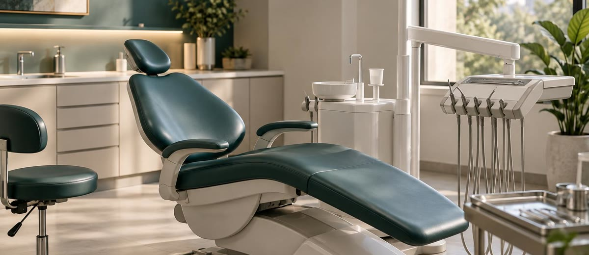

El coste que nadie calcula: las horas muertas de tu sillón dental

Hay un agujero en tu clínica que no aparece en ningún informe.
No es el sueldo del auxiliar que se fue. No es el anuncio que no rindió. No es el paciente al que no captaste.
Es la hora de sillón que no trabajó.
Y lo más curioso es que nadie la lleva contada.
El tiempo que se pierde sin nombre
En una clínica con dos sillones en activo, perder una hora entre los dos cada día parece poca cosa. ¿Qué es una hora? Un no-show que no avisó. Una primera visita que se fue sin plan de tratamiento. Un hueco entre citas que el auxiliar cubrió con burocracia.
El problema es que una hora al día son 20 horas al mes. Y 20 horas al mes, a una producción media de 150 €/hora, son 3.000 € que se evaporan. Sin que nadie lo vea. Sin que nadie lo gestione.
No sale en la cuenta bancaria como "pérdida". Sale simplemente como ausencia de ingreso. Y eso lo hace invisible.
Por qué no se mide
Las clínicas miden lo que entra: pacientes nuevos, presupuestos aceptados, facturación mensual. Rara vez miden lo que deja de entrar.
La hora de sillón vacía no es un gasto. Es una oportunidad que no ocurrió. Y el cerebro humano —y los sistemas de gestión de muchas clínicas— lleva mal la contabilidad de lo que no pasa.
El coste real de la inactividad no es lo que pagas por ella. Es lo que dejaste de producir mientras el sillón esperaba.
Las tres fugas más comunes
La mayoría de las horas muertas en una clínica dental vienen de tres sitios:
- El no-show sin protocolo. El paciente no viene, no avisa y no hay ningún sistema que gestione ese hueco. La clínica asume la ausencia como algo normal y sigue adelante.
- La primera visita que no convierte. El paciente vino, le presentaron un presupuesto y se fue a "pensárselo". Sin seguimiento activo, ese sillón tardó semanas en volver a llenarse con otro caso nuevo.
- Los huecos estructurales de agenda. Espacios entre citas mal calibrados, cambios de última hora sin lista de espera activa, o una agenda que no tiene cubiertas las bajas de última hora.
Ninguno de estos casos es dramático por sí solo. Juntos, son miles de euros al mes.
Qué hacen las clínicas que lo controlan bien
Las clínicas que tienen controlado este indicador no son las más grandes ni las que más publicidad hacen. Son las que tienen claro un número: cuántas horas de sillón producen a la semana frente a cuántas podrían producir.
Esa tasa de ocupación real les permite saber, con precisión, si su problema es de captación, de conversión o de gestión interna. Sin ese número, cualquier decisión de inversión en marketing es un disparo a ciegas.
En el Método EBA, el control de la tasa de ocupación es uno de los primeros indicadores que se instala en las clínicas. No porque sea el más complejo, sino porque sin él ninguna otra palanca —publicidad, recepción, seguimiento— funciona bien. Es el suelo sobre el que se construye todo lo demás.
La publicidad no tapa un cubo que gotea
La solución más habitual cuando la clínica no crece es invertir en más publicidad. Más anuncios, más presencia, más captación.
El problema es que si el sillón tiene fugas —no-shows, presupuestos sin seguimiento, huecos sin cubrir— meter más pacientes solo acelera el problema. El cubo sigue goteando, simplemente ahora se llena más rápido por arriba.
El primer paso no siempre es captar más. A veces es cerrar las fugas que ya tienes. Y para eso, necesitas saber exactamente dónde están.